6. L3VPN provisioning¶
Time: 60 minutes.
Objective: Create one L3VPN from CNC. NSO renders the device configuration from the IETF L3VPN network model. Steer the VPN onto the PCC-initiated SRv6 policy from chapter 5.
6.1 What you are about to commit¶
| Field | Value |
|---|---|
| Service name | CustA |
| Endpoints | PE1, PE2, PE3 |
| Route distinguisher and route targets | 100:100 |
| Steering | PE1-PE2_color10 |
| Transport | SRv6 |
6.2 Pre-check¶
MP-BGP configuration is not supported by the built-in function pack in CNC 7.2.
Because of CML licensing constraints (limited to 5 devices), a route reflector (RR) is not used in this topology. Therefore, verify that MP-BGP is configured in a full mesh between the PEs.
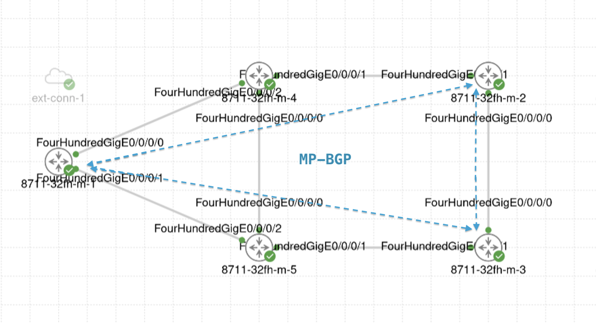
On the PEs:
RP/0/RP0/CPU0:C8711-1-PE#show bgp vpnv4 unicast neighbors brief
Wed Nov 4 13:07:17.984 UTC
Neighbor Spk AS Description Up/Down NBRState
2001:db8::2 0 65000 5d03h Established
2001:db8::3 0 65000 5d03h Established
RP/0/RP0/CPU0:C8711-1-PE#
RP/0/RP0/CPU0:C8711-1-PE#show run router bgp
Wed Nov 4 13:07:27.597 UTC
router bgp 65000
bgp router-id 1.1.1.1
address-family vpnv4 unicast
!
address-family l2vpn evpn
!
address-family link-state link-state
!
neighbor-group ibgp
remote-as 65000
update-source Loopback0
address-family vpnv4 unicast
!
address-family l2vpn evpn
!
!
neighbor 2001:db8::2
use neighbor-group ibgp
!
neighbor 2001:db8::3
use neighbor-group ibgp
!
neighbor 2001:db8:1::56
remote-as 65000
address-family link-state link-state
!
!
!
6.3 Create L3VPN service¶
Because there are many configuration parameters, load a JSON file to configure the L3VPN settings.
-
Go to Services & Traffic Engineering > Provisioning (NSO), then click L3VPN-Service.
-
Load Home > cnc-payloads > L3VPN_CustA.json.
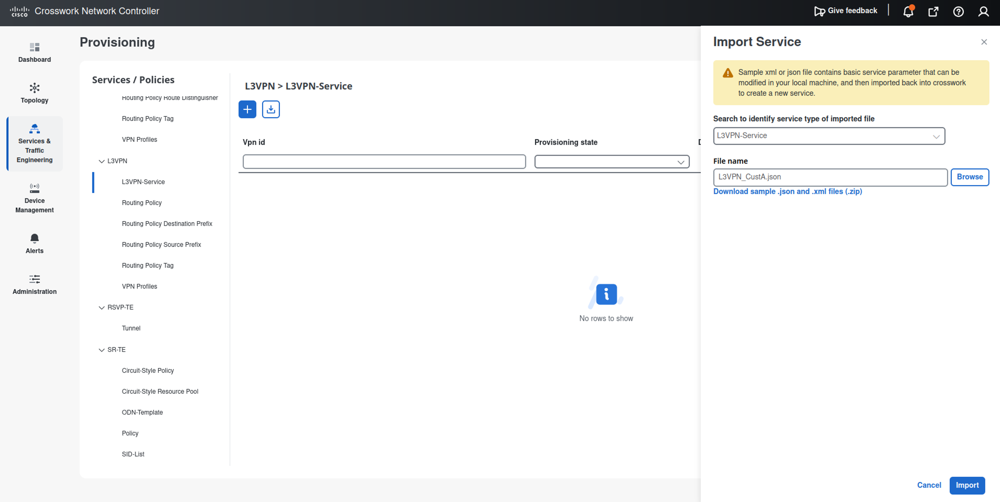
L3VPN_CustA.json
{ "ietf-l3vpn-ntw:l3vpn-ntw": { "vpn-services": { "vpn-service": [ { "vpn-id": "CustA", "vpn-service-topology": "ietf-vpn-common:custom", "vpn-instance-profiles": { "vpn-instance-profile": [ { "profile-id": "default", "rd": "0:100:100", "address-family": [ { "address-family": "ietf-vpn-common:ipv4", "vpn-targets": { "vpn-target": [ { "id": 0, "route-targets": [ { "route-target": "0:100:100" } ], "route-target-type": "both" } ] } } ], "cisco-l3vpn-ntw:srv6": { "address-family": [ { "name": "ietf-vpn-common:ipv4", "locator-name": "srv6" } ] } } ] }, "vpn-nodes": { "vpn-node": [ { "vpn-node-id": "C8711-1-PE", "active-vpn-instance-profiles": { "vpn-instance-profile": [ { "profile-id": "default" } ] }, "vpn-network-accesses": { "vpn-network-access": [ { "id": "0", "interface-id": "FourHundredGigE0/0/0/2", "connection": { "encapsulation": { "type": "ietf-vpn-common:dot1q", "dot1q": { "cvlan-id": 100 } } }, "ip-connection": { "ipv4": { "local-address": "192.168.1.1", "prefix-length": 24 } }, "routing-protocols": { "routing-protocol": [ { "id": "0", "type": "ietf-vpn-common:direct-routing" } ] } } ] } }, { "vpn-node-id": "C8711-2-PE", "active-vpn-instance-profiles": { "vpn-instance-profile": [ { "profile-id": "default" } ] }, "vpn-network-accesses": { "vpn-network-access": [ { "id": "0", "interface-id": "FourHundredGigE0/0/0/2", "connection": { "encapsulation": { "type": "ietf-vpn-common:dot1q", "dot1q": { "cvlan-id": 100 } } }, "ip-connection": { "ipv4": { "local-address": "192.168.2.1", "prefix-length": 24 } }, "routing-protocols": { "routing-protocol": [ { "id": "0", "type": "ietf-vpn-common:direct-routing" } ] } } ] } }, { "vpn-node-id": "C8711-3-PE", "active-vpn-instance-profiles": { "vpn-instance-profile": [ { "profile-id": "default" } ] }, "vpn-network-accesses": { "vpn-network-access": [ { "id": "0", "interface-id": "FourHundredGigE0/0/0/2", "connection": { "encapsulation": { "type": "ietf-vpn-common:dot1q", "dot1q": { "cvlan-id": 100 } } }, "ip-connection": { "ipv4": { "local-address": "192.168.3.1", "prefix-length": 24 } }, "routing-protocols": { "routing-protocol": [ { "id": "0", "type": "ietf-vpn-common:direct-routing" } ] } } ] } } ] }, "cisco-l3vpn-ntw:service-assurance": { "monitoring-state": "enable", "profile-name": "Gold_L3VPN_ConfigProfile system", "rule-name": "Rule-L3VPN-NM system" } } ] } } } -
Confirm that the following parameters are set.
- vpn-id:
CustA - vpn-service-topology:
custom
vpn-instance-profile (common configuration for all PEs)
- profile-id: default
- rd: 0:100:100
- address-family: ipv4
- route-target: 0:100:100
- route-target-type: both
- srv6: enable srv6 and set the locator to
srv6
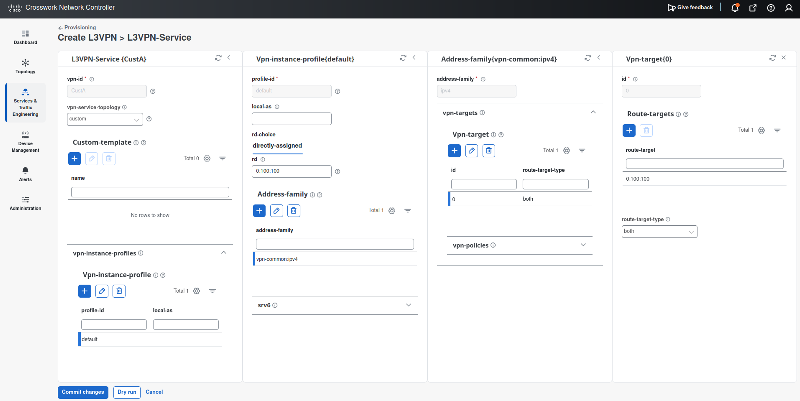
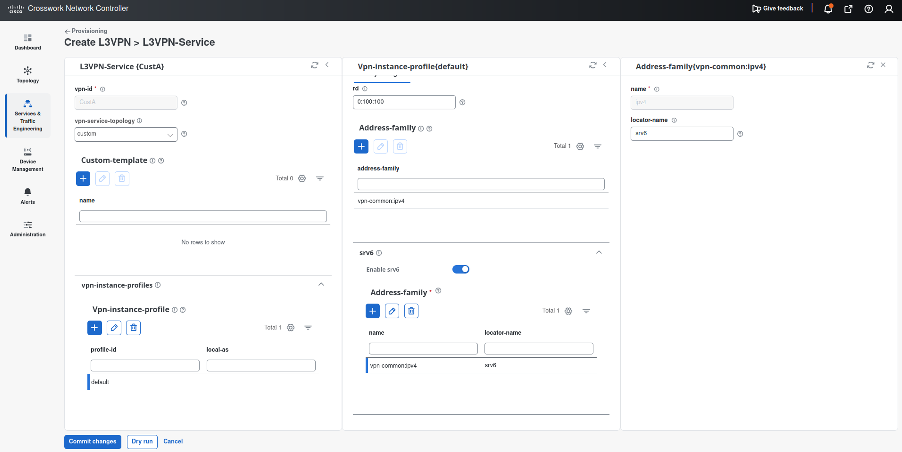
- vpn-node: C8711-1-PE
- vpn-instance-profile: default
- vpn-network-access: FourHundredGigE0/0/0/2
- encapsulation type: dot1q
- cvlan-id: 100
- ip-connection ipv4
- local-address: 192.168.1.1
- prefix-length: 24
- routing-protocol: direct-routing
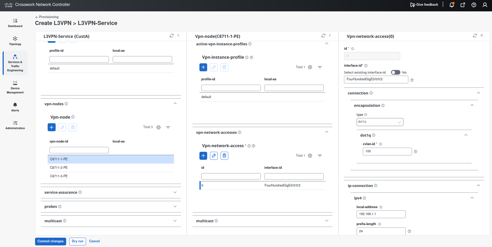
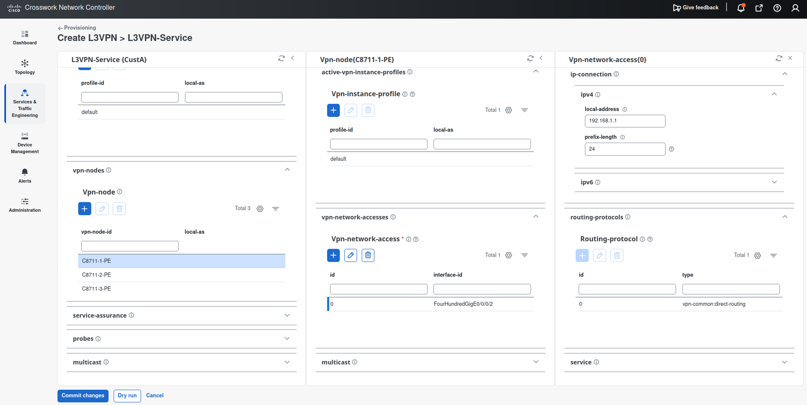
- vpn-node: C8711-2-PE
- vpn-instance-profile: default
- vpn-network-access: FourHundredGigE0/0/0/2
- encapsulation type: dot1q
- cvlan-id: 100
- ip-connection ipv4
- local-address: 192.168.2.1
- prefix-length: 24
- routing-protocol: direct-routing
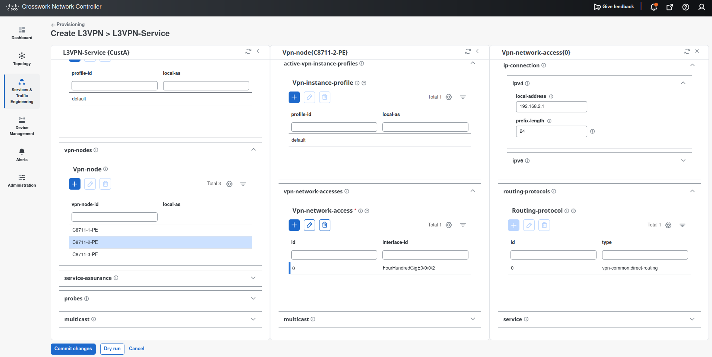
- vpn-node: C8711-3-PE
- vpn-instance-profile: default
- vpn-network-access: FourHundredGigE0/0/0/2
- encapsulation type: dot1q
- cvlan-id: 100
- ip-connection ipv4
- local-address: 192.168.3.1
- prefix-length: 24
- routing-protocol: direct-routing
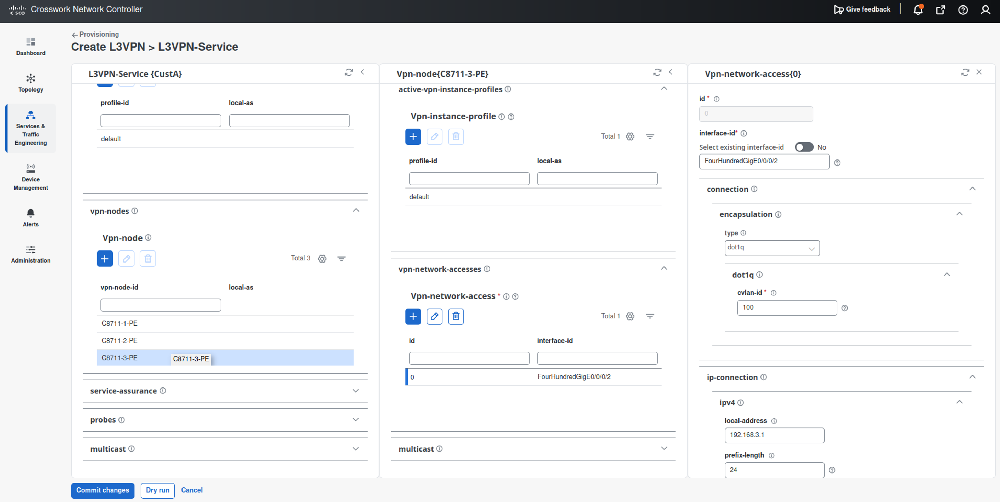
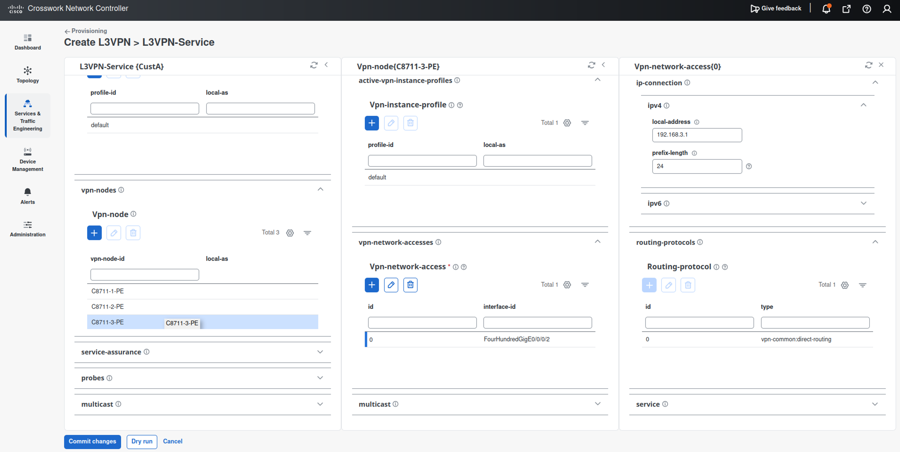
Service Assurance
- enable
service-assurance - monitoring state: enable
- preservation: remove (delete all historical data when monitoring stops)
- profile-name:
Gold_L3VPN_ConfigProfile system - rule-name:
Rule-L3VPN-NM system
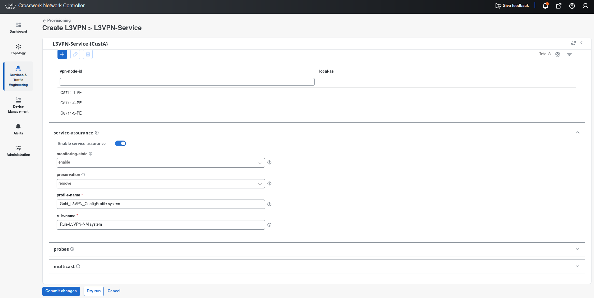
- vpn-id:
-
Click Dry-run to confirm the configuration.
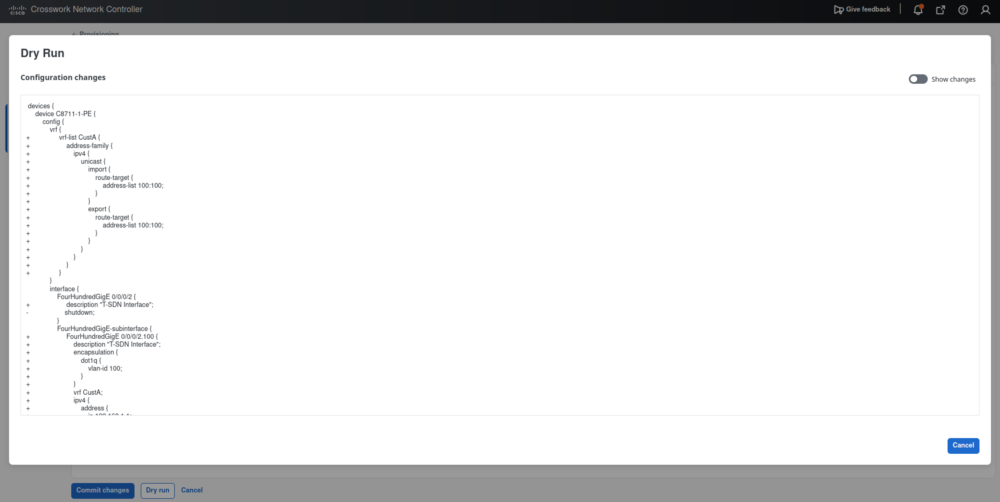
You can switch the display by using Show changes in the upper right.
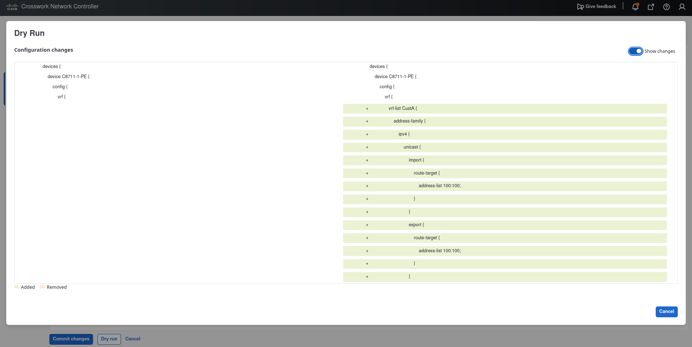
-
Click Commit changes.
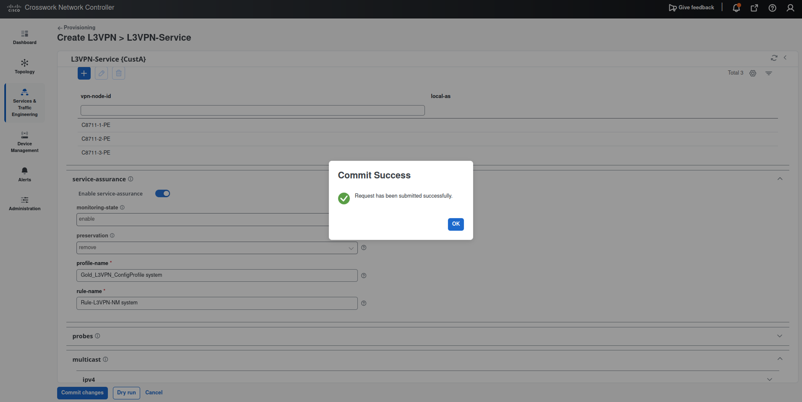
6.4 Confirm the L3VPN¶
via CNC GUI¶
- Open Services & Traffic Engineering > VPN Services.
-
Select
CustA.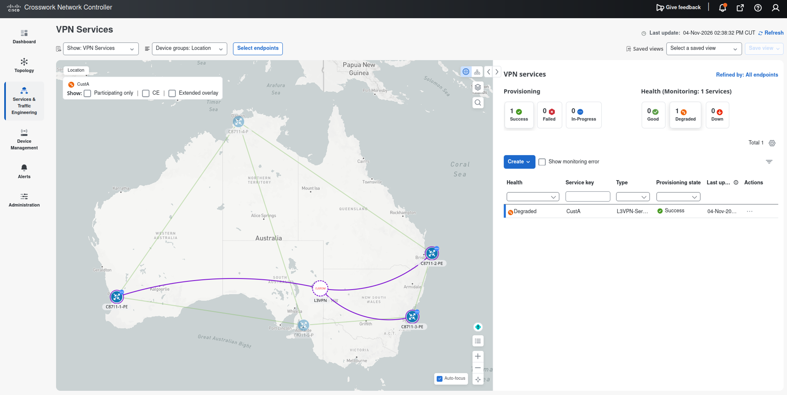
via CLI¶
On the PEs:
Confirm that a uDT4 SID is assigned to CustA.
RP/0/RP0/CPU0:C8711-1-PE#show segment-routing srv6 locator srv6 sid
Wed Nov 4 14:47:40.914 UTC
SID Behavior Identification Owner State RW
-------------------------- ---------------- -------------------------------- ------------------ ----- --
fcbb:bb00:1:: uN (PSP/USD) 'default':1 sidmgr InUse Y
fcbb:bb00:1:e000:: uA (PSP/USD) [FH0/0/0/0, Link-Local]:0 isis-1 InUse Y
fcbb:bb00:1:e001:: uA (PSP/USD) [FH0/0/0/1, Link-Local]:0 isis-1 InUse Y
fcbb:bb00:1:e002:: uB6 (PSP/USD Insert.Red) 'srte_c_10_ep_2001:db8::2' (10, 2001:db8::2) xtc_srv6 InUse Y
fcbb:bb00:1:e003:: uB6 (PSP/USD Insert.Red) 'srte_c_20_ep_2001:db8::3' (20, 2001:db8::3) xtc_srv6 InUse Y
fcbb:bb00:1:e004:: uDT4 'CustA' bgp-65000 InUse Y
RP/0/RP0/CPU0:C8711-1-PE#
The customer routes of the remote PEs are learned via MP-BGP.
RP/0/RP0/CPU0:C8711-1-PE#show ip route vrf CustA
Wed Nov 4 14:48:09.301 UTC
<--- omitted --->
Gateway of last resort is not set
C 192.168.1.0/24 is directly connected, 00:11:14, FourHundredGigE0/0/0/2.100
L 192.168.1.1/32 is directly connected, 00:11:14, FourHundredGigE0/0/0/2.100
B 192.168.2.0/24 [200/0] via 2001:db8::2 (nexthop in vrf default), 00:11:13
B 192.168.3.0/24 [200/0] via 2001:db8::3 (nexthop in vrf default), 00:11:13
RP/0/RP0/CPU0:C8711-1-PE#
The CEF table on PE1 for the CE-facing interface address of PE2 shows that customer packets are encapsulated with the uDT4 SID of PE2.
RP/0/RP0/CPU0:C8711-1-PE#show cef vrf CustA 192.168.2.1
Wed Nov 4 14:48:53.148 UTC
192.168.2.0/24, version 3, SRv6 Headend, internal 0x5000001 0x30 (ptr 0x9e336dc8) [1], 0x0 (0x0), 0x0 (0x9f553a58)
Updated Nov 4 14:37:08.702
Prefix Len 24, traffic index 0, precedence n/a, priority 3
gateway array (0xb5039098) reference count 1, flags 0x2010, source rib (7), 0 backups
[1 type 3 flags 0x48441 (0x9e0fdf98) ext 0x0 (0x0)]
LW-LDI[type=0, refc=0, ptr=0x0, sh-ldi=0x0]
gateway array update type-time 1 Nov 4 14:37:08.702
LDI Update time Nov 4 14:37:08.715
Level 1 - Load distribution: 0
[0] via fcbb:bb00:2::/128, recursive
via fcbb:bb00:2::/128, 3 dependencies, recursive [flags 0x6000]
path-idx 0 NHID 0x0 [0x9ea494b8 0x0]
next hop VRF - 'default', table - 0xe0800000
next hop fcbb:bb00:2::/128 via fcbb:bb00:2::/48
SRv6 H.Encaps.Red SID-list {fcbb:bb00:2:e002::}
SRv6 H.Insert.Red SID-list {}
Load distribution: 0 (refcount 1)
Hash OK Interface Address
0 Y FourHundredGigE0/0/0/0 fe80::26d:66ff:fe90:9010
RP/0/RP0/CPU0:C8711-1-PE#
The CEF table on PE1 for the CE-facing interface address of PE3 shows that customer packets are encapsulated with the uDT4 SID of PE3.
RP/0/RP0/CPU0:C8711-1-PE#show cef vrf CustA 192.168.3.1
Wed Nov 4 14:49:04.777 UTC
192.168.3.0/24, version 4, SRv6 Headend, internal 0x5000001 0x30 (ptr 0x9e336eb8) [1], 0x0 (0x0), 0x0 (0x9f553ab8)
Updated Nov 4 14:37:08.713
Prefix Len 24, traffic index 0, precedence n/a, priority 3
gateway array (0xb5039198) reference count 1, flags 0x2010, source rib (7), 0 backups
[1 type 3 flags 0x48441 (0x9e0fe058) ext 0x0 (0x0)]
LW-LDI[type=0, refc=0, ptr=0x0, sh-ldi=0x0]
gateway array update type-time 1 Nov 4 14:37:08.713
LDI Update time Nov 4 14:37:08.713
Level 1 - Load distribution: 0
[0] via fcbb:bb00:3::/128, recursive
via fcbb:bb00:3::/128, 3 dependencies, recursive [flags 0x6000]
path-idx 0 NHID 0x0 [0x9ea4a3b8 0x0]
next hop VRF - 'default', table - 0xe0800000
next hop fcbb:bb00:3::/128 via fcbb:bb00:3::/48
SRv6 H.Encaps.Red SID-list {fcbb:bb00:3:e002::}
SRv6 H.Insert.Red SID-list {}
Load distribution: 0 (refcount 1)
Hash OK Interface Address
0 Y FourHundredGigE0/0/0/1 fe80::2d9:b8ff:fe11:c810
RP/0/RP0/CPU0:C8711-1-PE#
You can also check connectivity by using ping.
RP/0/RP0/CPU0:C8711-1-PE#ping vrf CustA 192.168.2.1
Wed Nov 4 15:19:24.760 UTC
Type escape sequence to abort.
Sending 5, 100-byte ICMP Echos to 192.168.2.1 timeout is 2 seconds:
!!!!!
Success rate is 100 percent (5/5), round-trip min/avg/max = 6/9/13 ms
RP/0/RP0/CPU0:C8711-1-PE#
RP/0/RP0/CPU0:C8711-1-PE#ping vrf CustA 192.168.3.1
Wed Nov 4 15:19:32.993 UTC
Type escape sequence to abort.
Sending 5, 100-byte ICMP Echos to 192.168.3.1 timeout is 2 seconds:
!!!!!
Success rate is 100 percent (5/5), round-trip min/avg/max = 7/24/86 ms
RP/0/RP0/CPU0:C8711-1-PE#
6.5 Packet Capture (Optional)¶
Use the packet capture feature of CML to observe the encapsulation in the IPv6 header.
-
On
PE1, start a ping to the CE-facing interface address ofPE2.RP/0/RP0/CPU0:C8711-1-PE# ping vrf CustA 192.168.2.1 count 100000 -
Right-click the link between
P4andPE2. -
Start a packet capture.
-
Select the ICMP echo packet from 192.168.1.1 to 192.168.2.1.
-
Find the IPv6 header. The destination address should be the uDT4 SID of PE2 (for example, fcbb:bb00:2:e002::).
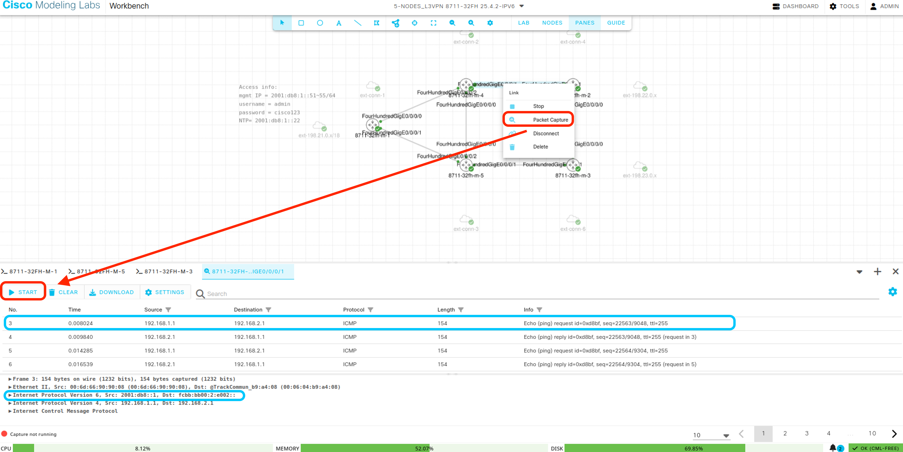
Done when¶
- The
CustAservice is provisioned. - The VRF ping between the PEs succeeds.
Clean up¶
Before proceeding to chapter 7, delete all L3VPN services, because the same CE-facing interfaces are used for L2VPN provisioning.
-
Go to Services & Traffic Engineering > Provisioning (NSO) > L3VPN-Service.
-
Click Actions > Delete dry run
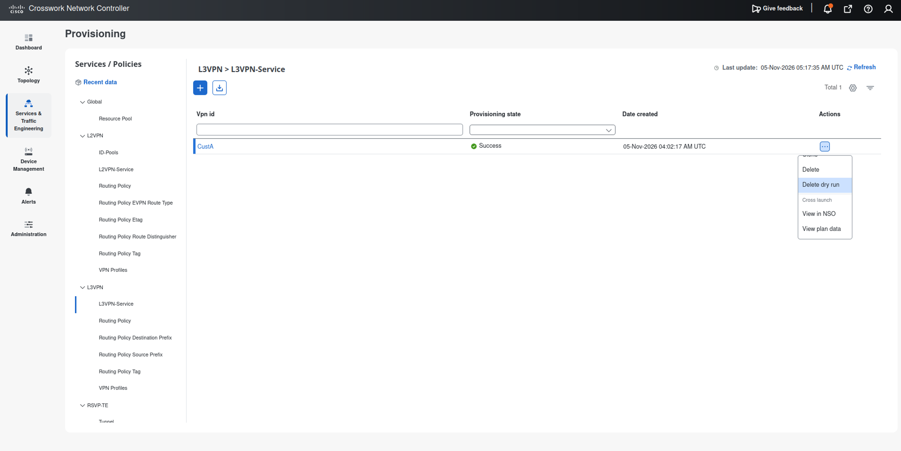
-
Confirm the dry-run result and click Delete.
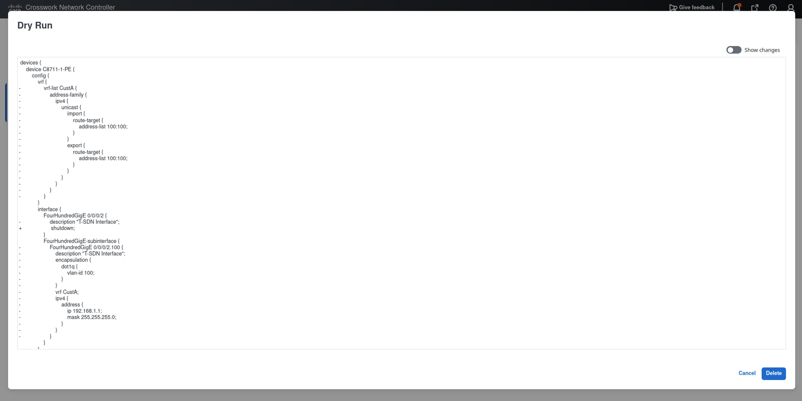